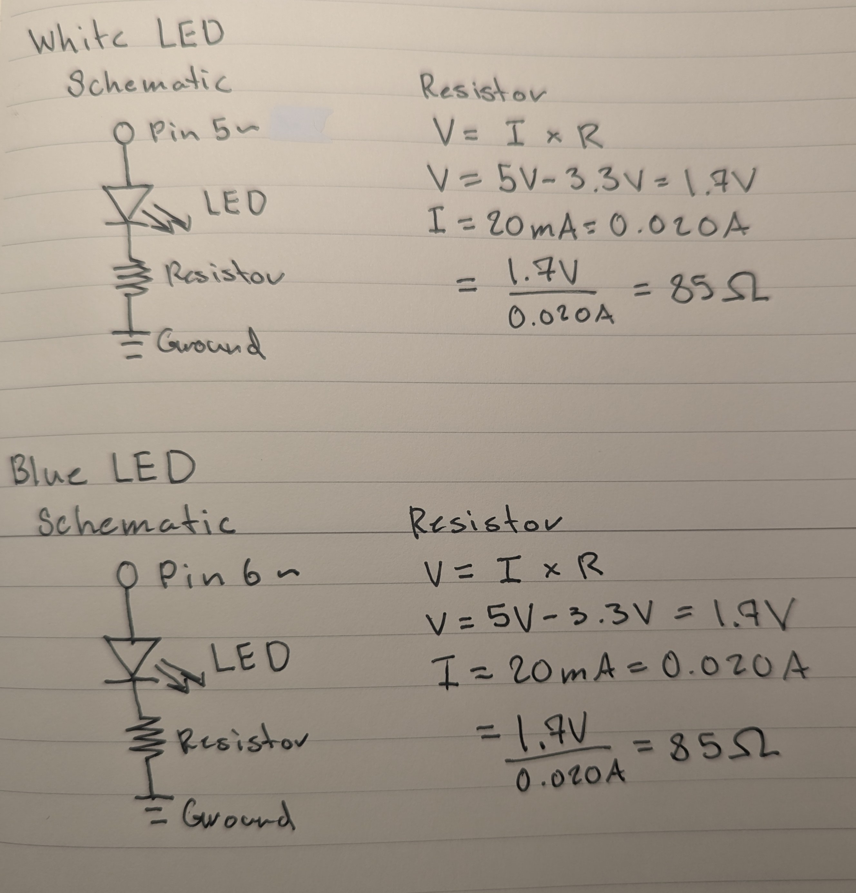
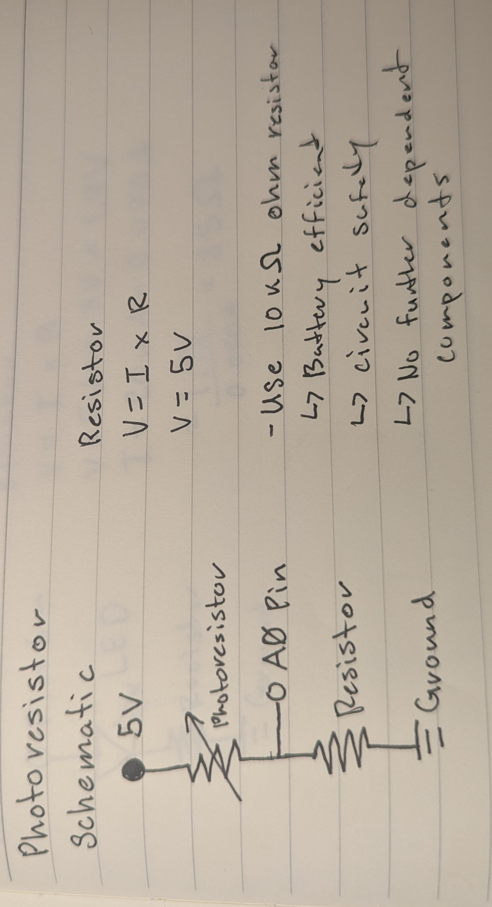
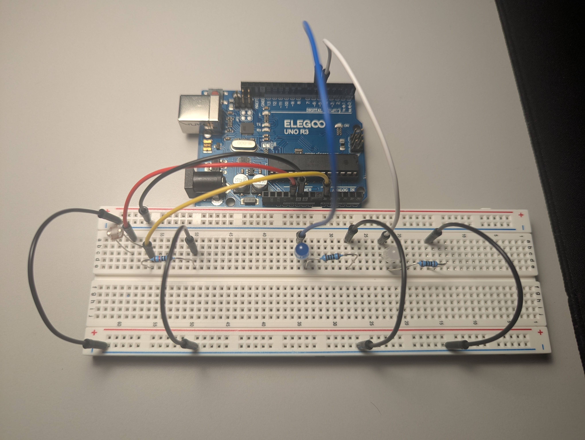
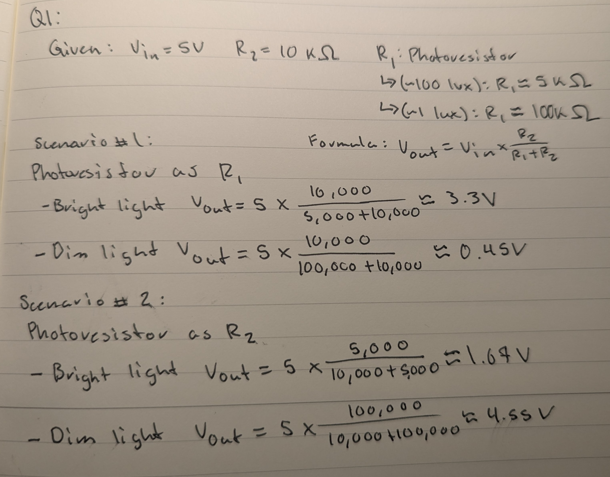
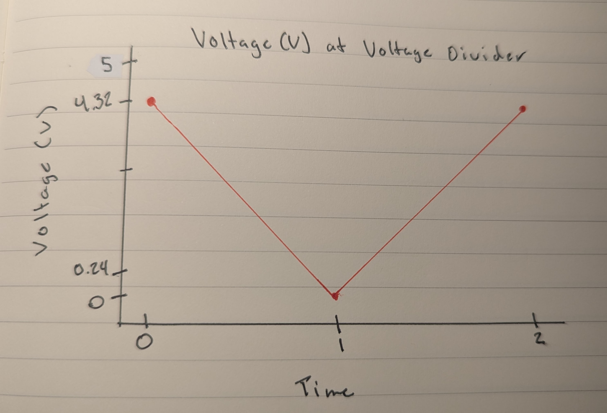

Schematics & Resistors

For both the Blue and White LED schematics, they are connected
to their respective PWM pins (pins 5 and 6), each with a 100-ohm
resistor. Given the known voltage drop for their color, which is
3.3V, 850 ohms of resistance is required. However, the closest
standard resistor value available is 100 ohms, so it is used.

For the photoresistor schematic it differs in comparison to the
simple LEDs. Connected to the 5V in order to always provide power
to the photoresistor, which is then read via an analog pin inside
the voltage divider. As we are simply reading an analog signal
from the photoresistor, we use a 10k-ohm resistor in order to
ensure the circuit is both safe and energy efficient.
Voltage Divider
In the voltage divider circuit, the measured voltage changes depending on the state of
the photoresistor. With the light off, the blue LED is off, and the white LED is on, the
voltage at the divider is 0.24V. When the light is on, the blue LED is on, the white LED is off,
and the voltage increases to 4.32V. These readings reflect the circuit's response to
the photoresistor's state role in controlling the voltage divider output based on light conditions.
Code Structure
/*
Octavio Badillo
1/27/2025
A program that calibrates a photoresistor and dynamically controls the brightness
of two LEDs on a breadboard based on the photoresistor's readings. The program
recalibrates the sensor range if the input deviates from a specfied allowed margin of
error.
*/
// Constants
const int whiteLED = 5; // White LED pin
const int blueLED = 6; // Blue LED pin
const int leds[] = {whiteLED, blueLED}; // Array of LED pins
// Variables
int timer = 500; // Delay time between readings during calibration
int sensorMax = 0; // Maximum sensor value during calibration
int sensorMin = 1023; // Minimum sensor value during calibration
int errorMargin = 100; // Margin of Error for calibration
// Function to calibrate the sensor by finding min and max values
void calibration() {
sensorMin = 1023; // Reset sensorMin to highest possible value
sensorMax = 0; // Reset sensorMax to lowest possible value
// Loop to take 10 readings for calibration
for (int i = 1; i < 11; i++) {
int val = analogRead(A0); // Read the analog value from pin A0
if (val < sensorMin) sensorMin = val; // Update sensorMin if value is lower
if (val > sensorMax) sensorMax = val; // Update sensorMax if value is higher
// Print the current reading status
Serial.print("Reading ");
Serial.print(i);
Serial.println(" finished");
delay(timer); // Delay between readings for user calibration
}
// Print calibration results to Serial Monitor
Serial.println("Calibration Completed");
Serial.println("---------------------");
Serial.println("Calibration Results:");
Serial.print("Sensor Min: ");
Serial.println(sensorMin);
Serial.print("Sensor Max: ");
Serial.println(sensorMax);
}
// Perform initial setup: serial communication, calibration, and pin configurations
void setup() {
Serial.begin(9600); // Initialize serial communication at 9600 baud
calibration(); // Initial calibration
// Set the LED pins as OUTPUT
for (int i = 0; i < 2; i++) {
pinMode(leds[i], OUTPUT);
}
}
// Continuously adjust LED brightness based on sensor readings, with dynamic recalibration
void loop() {
int val = analogRead(A0); // Read the analog value from pin A0
// Check if the current value exceeds the set error margin; recalibrate if necessary
if (val > sensorMax + errorMargin || val < sensorMin - errorMargin) {
calibration();
}
// Constrain the sensor value to the calibrated range
int sensVal = constrain(val, sensorMin, sensorMax);
// Map the constrained value to the PWM range (0-255)
int outVal = map(sensVal, sensorMin, sensorMax, 255, 0);
// Write the mapped values to LEDs
analogWrite(blueLED, 255 - outVal); // Blue LED is opposite of white LED
analogWrite(whiteLED, outVal); // White LED brightness is proportional to sensor value
}
The timer and errorMargin are user-specified values. The timer is set to a moderate duration (500ms) to ensure there is enough time for user input, such as adjusting light conditions during calibration, enabling the program to determine accurate sensorMin and sensorMax values. Without this delay, the program would complete calibration too quickly, potentially resulting in incorrect min/max values. The errorMargin sets a threshold for detecting significant deviations in sensor readings, triggering recalibration only when necessary.
The constraion() function ensures that the current sensor value remains within the calibrated range, preventing unexpected outlier values from affecting LED behavior. After constraining, the map() function scales the sensor value to the PWM range (0–255), where 255 represents maximum brightness and 0 represents the LED being off.
The LED output logic is straightforward: the blue LED's brightness is the inverse of the white LED's brightness. As the white LED gets brighter (outVal), the blue LED gets dimmer (255 - outVal), creating a balanced visual effect.
The I/O Circuit
I/O Circuit in Action!

Additional Questions
Q1: In your voltage divider, can the variable resistor be either R1 or R2 or does it need to be one or the other? Justify your answer with example calculations.

After examining both scenarios, we can see that the variable resistor can be either
R1 or R2. However, the inner workings of how the circuit functions will change. As we
see in scenario #1, as lux increases, so does V_out, which is the output observed when
using a multimeter in the currently made circuit. Inversely, if we placed the variable
resistor in the R2 spot, we could expect the opposite to occur: as lux decreases,
V_out will increase.
Q2: Draw a graph where the x-axis is time and the y-axis is voltage. Plot the voltage at V-measure of your voltage divider of your shared gif. 
Q3: AnalogWrite and analogRead are respectively 8-bit and 10-bit values. Imagine you had 10-bit PWM and a 16-bit analog-to-digital converter instead. How would this change your map() code? Explain your answer.
Now making the map() function map the 16-bit input range (e.g., sensorMin to sensorMax) to the 10-bit output range of 0–1023. This would change the code to something like map(sensorValue, sensorMin, sensorMax, 1023, 0) to match the updated resolution. These would improve both reading values and smoother transitions when writing PWM signals, as the increased bit depth would provide finer control over both input and output.